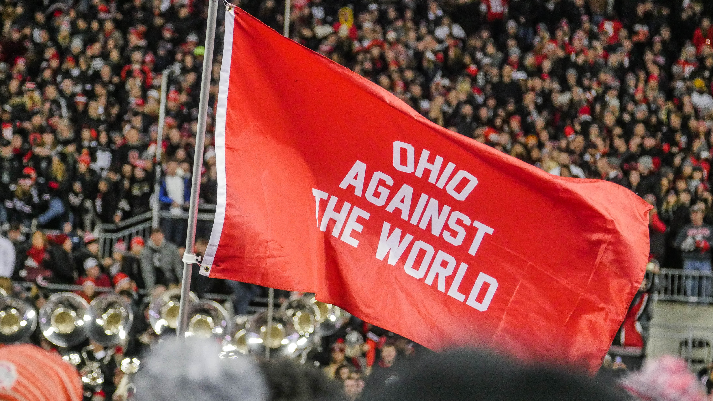

Background
Hello, my name is Ben - pleasure to meet you.
From my humble beginnings of not knowing anything about software development in 2018, I've written countless lines of code that have created beautiful, prosperous software for companies, friends/family, and myself. I've become quite confident in my ability to construct products using knowledge I already have, learning new technologies to create dynamic solutions, and gradually polishing my skills one project at a time.
Education
- May 2018: Graduated from Beavercreek High School with Honors
- May 2022: Graduated from The Ohio State University with a Bachelor of Science in Computer Science and Engineering (Summa Cum Laude)
- May 2023: Graduated from The Ohio State University with a Master of Science in Computer Science and Engineering
Certifications
- Late 2023 (expected): AWS Cloud Practioner
- Early 2024 (expected): AWS Developer Associate
- Mid 2024 (expected): AWS Data Analytics Speciality
Interests
Sports
As a player, I enjoy to play basketball, bowling, softball, and soccer. As a fan, I like to watch the NBA (CLE/LAL/PHX), the NFL (CLE/NO), NCAAF/NCAAB(tOSU/WSU), the PBA (bowling), the PGA (golfing - especially Tiger Woods!), and horse racing.
Reading/Philosophy
Favorite Books:- Rich Dad, Poor Dad - Robert Kiyosaki and Sharon Lechter
- The Power of Now - Eckhart Tolle
- "You shall, I question not, find a way to the top if you diligently seek for it; for nature hath placed nothing so high that it is out of the reach of industry and valor." - Alexander The Great
- "Develop success from failures. Discouragement and failure are two of the surest stepping stones to success." - Dale Carnegie
- "More is lost by indecision than wrong decision." - Marcus Tullius Cicero
- "Do. Or do not. There is no try." - Yoda (Star Wars: Episode 5 - 1980)
- "The purpose of life is to live it, to taste experience to the utmost, to reach out eagerly and without fear for newer and richer experience." - Eleanor Roosevelt
Coding
Ever since I began to code, I usually combine my hobbies with something I have learned in class or from YouTube to create something interesting for myself.
Things I have attempted:- NCAAF stats that determine championships and/or better records - python
- NBA stats that determine playoff contending teams - python and tableau
- Horse racing predictive modeling - google colab (python), excel, and tableau
- Roullete betting strategies - python and excel
- Stock information/stats that determine pricing patterns - excel and python
- Personal website from scratch - html, css, django
- shell scripts to automate processes - bash
- Dummy NBA game - python
- Simple guessing games or simple GUIs - python and java
- Created a simple API system - Java (Spring Boot)
- I even bought a Macbook for a few months to check out how different coding is vs a Windows machine
Check out my GitHub here: GitHub
Gaming
I grew up with an Xbox 360, and I still use it to this day. I've also used the Xbox One, but I have migrated to the "PC Master Race" recently. I built my own PC a few years ago and have a semi-beefy graphics card (3060 TI FE).
Games I play:- Xbox Games: NCAA Football series, Assassin's Creed series, Call of Duty series
- PC Games: Fortnite, Valorant, Fortnite, Far Cry series, Assassin's Creed series
YouTube/Emerging Tech
I use YouTube as a resource - I tend to watch videos about AWS technologies and other languages like Go, Swift, Rust, Kotlin, PHP. Also, I use YouTube to learn about emerging technologies - a good portion is about new hardware from Apple/Google/Samsung. IMO, it is smart to stay up to date with what technology is coming out to consumers to better prepare yourself to make smart purchases or be aware of market opportunities (potential investments).